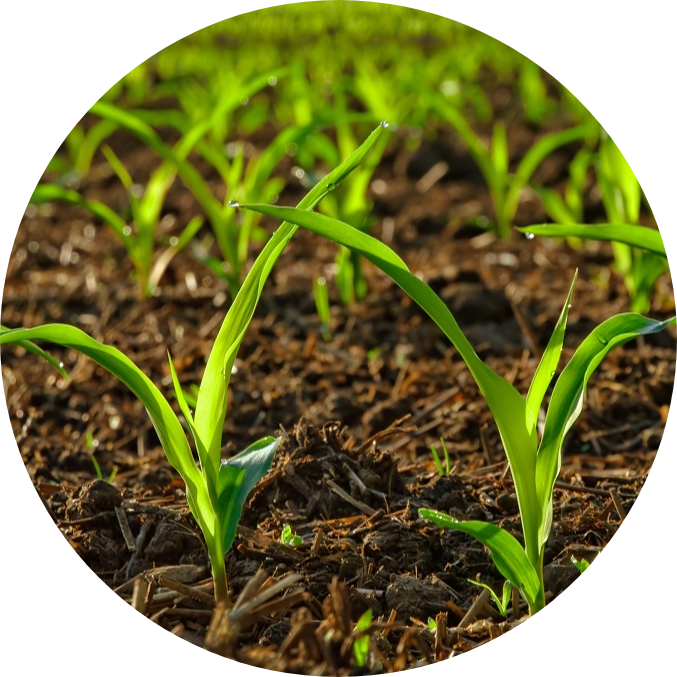
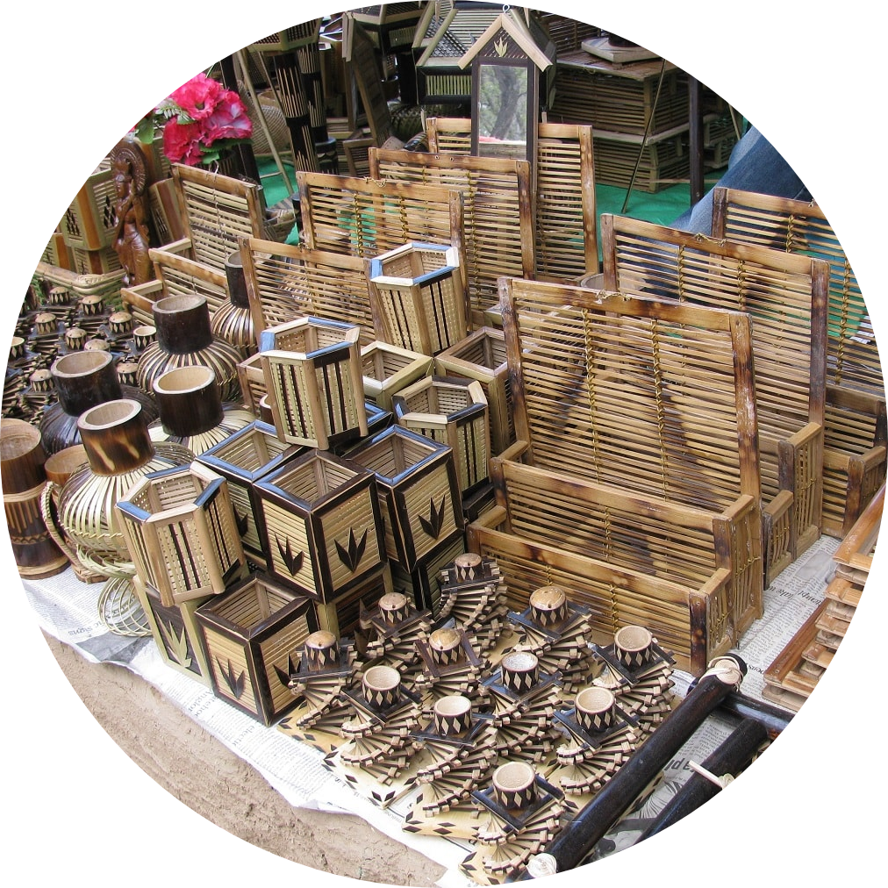
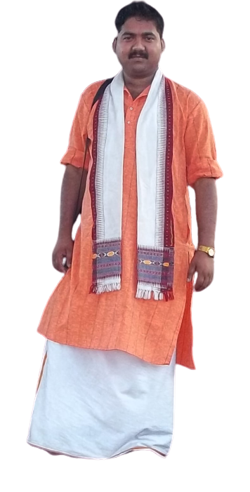
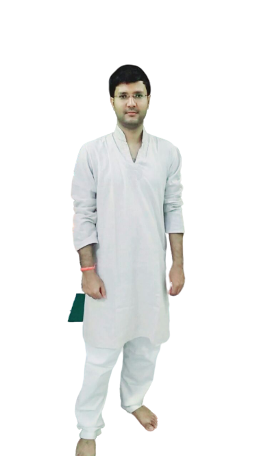

Our Activities

Agricultural Development

Child-Education

Flood-Relief


Acharya Santosh Kumar Shastri (Director/Settlor)
Here is the role we play.We are trying to provide a plateform for people who are unemployed and wish to work for in the state using their Skills. We give an opportunity to the fellow by providing the needfull assistance under our best capability and reach.
We look forward for many charitable works possible for us. Eduation is the right of every individual. So, we are comitted to provide education Assistance to the children according to the prorities provided. This trust is formed inorder to give ourself for the benificial of the poor and the needy once.We are always ready to support and lay a helping hand to the the best way possible.

Surendra Sharma
(Secretary)

@ To work with special concentration for the Child & Women Welfare.
@ To promote charitable values, literature, science, art, education and culture.
@ To train the downtrodden people in general for human resource development in view of the emerging needs such as database development, resource survey methodologies, computer, environmental, studies, health, education, and energy problems.
@ To work for the welfare of trust neglected and martingales people.
@To spread the teaching & idealogy of true meaning of religion.
@ To encourage and promote family welfare activities among needy people.
@ To start and assist the relief measures in those parts of the country which become effected to natural calamities like famine, fire flood, earthquakes etc.
@ To promote and protect natural herbs and plants by cultivation, preservation, storage, processing, demonstration, creating botanical garden and providing necessary training.
@ To work for the welfare of Agricultural workers, Farmers, Unorganized Labours, Industrial Labours and Migrated Labours.
@To work against the conservation of forest & environment.
You can help us by Donating. Details are as follows:
(ATG not made)
Online Mode is not Available for now but are most welcome!!!!.
91+ 9435775843/9774012041
santosharyaji@gmail.com
Railway Station Raod, Bokajan, Assam 782480.